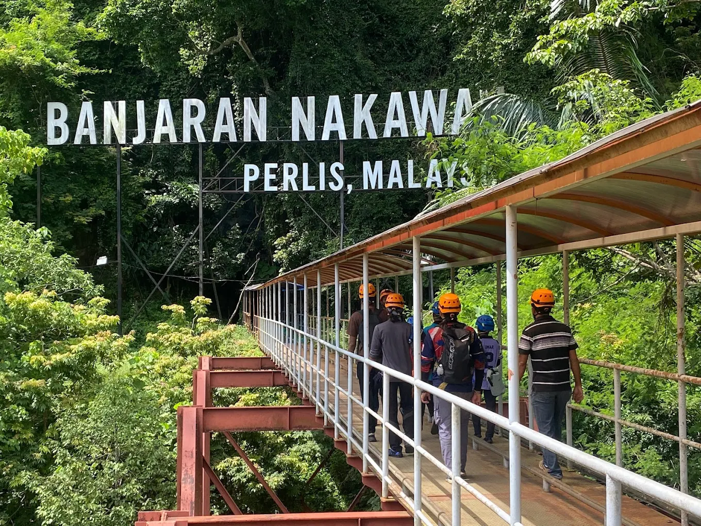
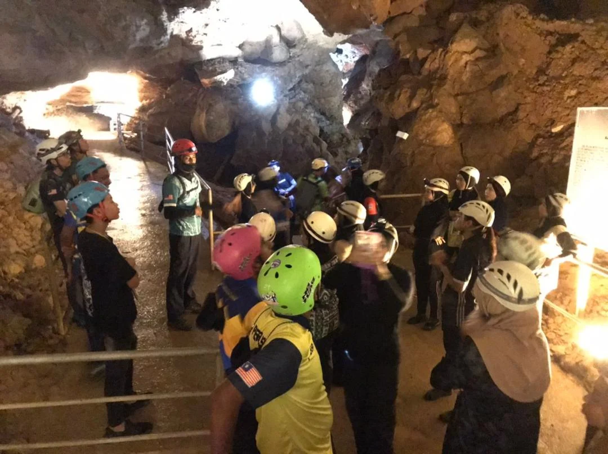
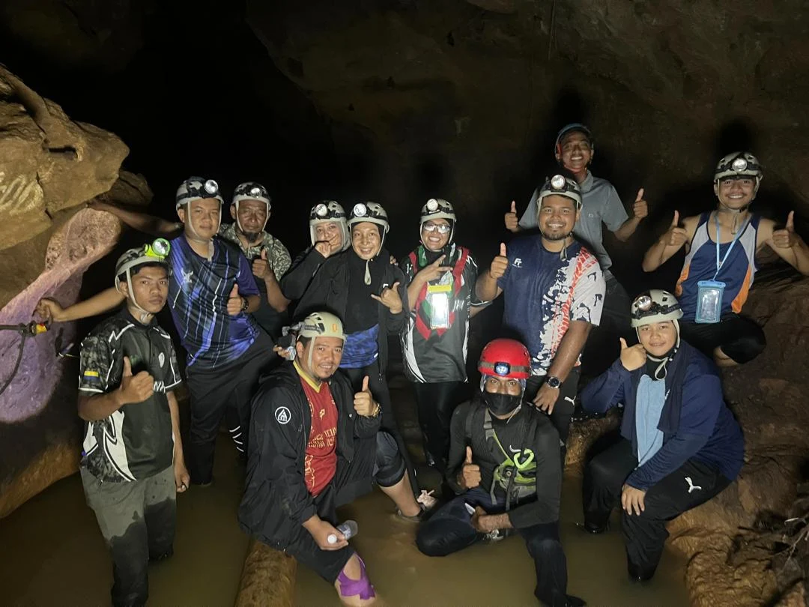

Muhammad Syafiq is an active member of the Adventure Crew who is involved in various
exploration and adventure activities such as hiking, rock climbing and caving. He is
responsible for ensuring safety before, during and after each activity.
Apart from that, he also manages the planning of the route (track), the preparation of
equipment and assists other group members in facing challenges throughout the
expedition. His involvement also includes collaborating with external parties such as
geologists and doctors in conducting studies related to the environment.
With extensive experience, he plays an important role as an individual who inspires
young people to dare to try outdoor activities and appreciate the beauty of nature.
Muhammad Syafiq has made significant contributions in the field of nature exploration
through his active participation in various expeditions. He has also helped in efforts
to introduce the importance of environmental conservation to the community through the
activities carried out.
In addition, he played a role in facilitating research by bringing experts such as
geologists and doctors to specific locations for research purposes. This effort
indirectly contributed to the increase in knowledge in the fields of science and the
environment.
His involvement in relief missions such as helping flood victims also demonstrates a
high commitment to social responsibility and concern for the local community.


His hope is that more young people will become familiar with adventure activities such
as climbing and caving so that these activities can be continued by the next generation
in the future. This is so that the cave and hill areas are always preserved under joint
care.
He also hopes that the current generation will continue to explore in this field so
that it can benefit both themselves and the environment. In addition, he also hopes
that it is not only Perlis that should be explored, but other states as well so that we
can enjoy the natural beauty of our country.